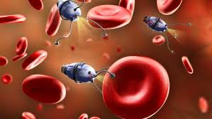

Los Nanobots

Los nanobots son máquinas, o robots, de dimensiones nanométricas que es una medida ultra pequeña , comparada a la de un átomo. La nanotecnología es un campo de las ciencias aplicadas dedicado al control y manipulación de la materia a una escala menor que un micrómetro, es decir, a nivel de átomos y moléculas (nanomateriales). Lo más habitual es que tal manipulación se produzca en un rango de entre uno y cien nanómetros. Para hacerse una idea de lo pequeño que puede ser un nanobot, más o menos un nanobot de 50 nm tiene el tamaño de 5 capas de moléculas o átomos.